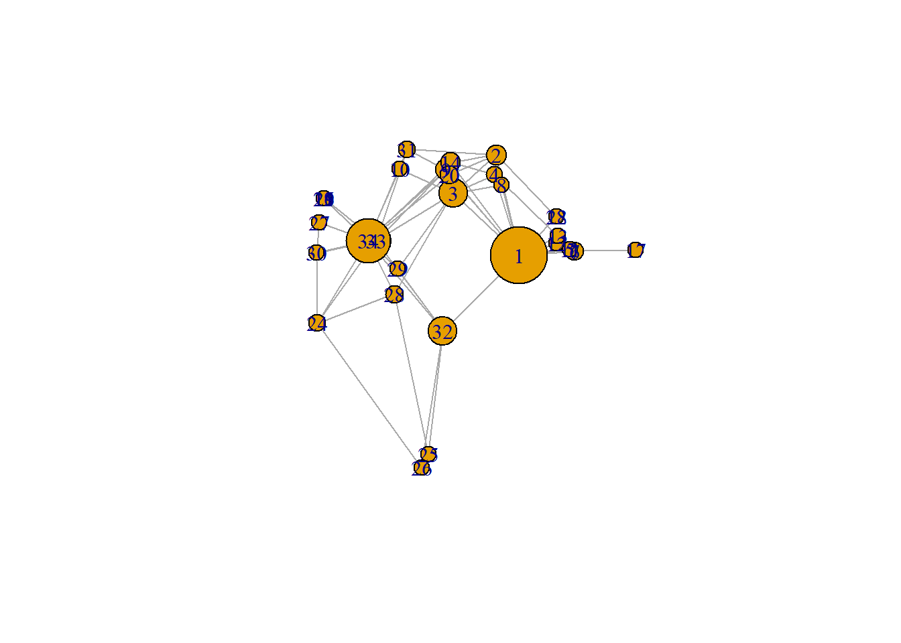

Chapter 12 Network Visualization
Visualizations of social networks are cool. I am often impressed if I see them in papers. They seem to signal that the authors are technically savvy.
If you know me a little bit you will also know that I think that the importance of a good description of your data cannot be downplayed: describing before (and over) explanation; simplicity (e.g. univariate or bivatiate statistics) trumps complexity. What is a better ‘description’ of your network data than a graphical summary of your network? What could I possibly have against network visualizations?
Unfortunately, more often than not the story behind the (cool, dynamic, interactive) network picture is not clear. I do not see selection and influence processes. We have have to guess what the node and tie attributes are. And, importantly, typical network structures remain elusive.
A good example of a bad network visualization is Smallworld, introduced in section 1.4.1.1.
Paradoxically, one of the reasons why oftentimes it is not worth the time to look at network visualisations is because scholars did not think it was worth the time to look at the data.
The take home message of this chapter is that before you can make a successful network visualization you need to answer the following question:
- What story do I want my network visualization to tell?
The answer to this question depends on:
- your research question
- descriptive statistics of your data
- how preliminary network plots are able to convey your message.
In this chapter we will take on three case studies:
- Smallworld: Should tell the story that a typical smallworld network has a relatively low density, high level of clustering and low average path length.
- Twittersphere in the Dutch House of Parliament: should tell the story that twitter networks are segregated along party affiliation.
- Co-author network of sociology staff of Radboud University Nijmegen:
But before we take on these case studies, we will start with a classical example: Zachary’s karate club (Zachary 1977).
Where for our analyses we heavily relay on the R package
lavaan(Rosseel 2012) andRSiena(T. A. B. Snijders et al. 2021), for network description and visualisation we will mainly useigraph(file. 2020).
12.1 Zachary’s karate club
As stated above, we will mainly rely on the igraph package. This means we have to make an igraph graph object before we can start doing anything. Luckily igraph comes with Zachary’s network build-in. But don’t worry, we will start from scratch later on. Let us have a first look at the data.

#> [,1] [,2] [,3] [,4] [,5] [,6] [,7] [,8] [,9] [,10] [,11] [,12] [,13] [,14] [,15] [,16] [,17]
#> [1,] 0 1 1 1 1 1 1 1 1 0 1 1 1 1 0 0 0
#> [2,] 1 0 1 1 0 0 0 1 0 0 0 0 0 1 0 0 0
#> [3,] 1 1 0 1 0 0 0 1 1 1 0 0 0 1 0 0 0
#> [4,] 1 1 1 0 0 0 0 1 0 0 0 0 1 1 0 0 0
#> [5,] 1 0 0 0 0 0 1 0 0 0 1 0 0 0 0 0 0
#> [6,] 1 0 0 0 0 0 1 0 0 0 1 0 0 0 0 0 1
#> [7,] 1 0 0 0 1 1 0 0 0 0 0 0 0 0 0 0 1
#> [8,] 1 1 1 1 0 0 0 0 0 0 0 0 0 0 0 0 0
#> [9,] 1 0 1 0 0 0 0 0 0 0 0 0 0 0 0 0 0
#> [10,] 0 0 1 0 0 0 0 0 0 0 0 0 0 0 0 0 0
#> [11,] 1 0 0 0 1 1 0 0 0 0 0 0 0 0 0 0 0
#> [12,] 1 0 0 0 0 0 0 0 0 0 0 0 0 0 0 0 0
#> [13,] 1 0 0 1 0 0 0 0 0 0 0 0 0 0 0 0 0
#> [14,] 1 1 1 1 0 0 0 0 0 0 0 0 0 0 0 0 0
#> [15,] 0 0 0 0 0 0 0 0 0 0 0 0 0 0 0 0 0
#> [16,] 0 0 0 0 0 0 0 0 0 0 0 0 0 0 0 0 0
#> [17,] 0 0 0 0 0 1 1 0 0 0 0 0 0 0 0 0 0
#> [18,] 1 1 0 0 0 0 0 0 0 0 0 0 0 0 0 0 0
#> [19,] 0 0 0 0 0 0 0 0 0 0 0 0 0 0 0 0 0
#> [20,] 1 1 0 0 0 0 0 0 0 0 0 0 0 0 0 0 0
#> [21,] 0 0 0 0 0 0 0 0 0 0 0 0 0 0 0 0 0
#> [22,] 1 1 0 0 0 0 0 0 0 0 0 0 0 0 0 0 0
#> [23,] 0 0 0 0 0 0 0 0 0 0 0 0 0 0 0 0 0
#> [24,] 0 0 0 0 0 0 0 0 0 0 0 0 0 0 0 0 0
#> [25,] 0 0 0 0 0 0 0 0 0 0 0 0 0 0 0 0 0
#> [26,] 0 0 0 0 0 0 0 0 0 0 0 0 0 0 0 0 0
#> [27,] 0 0 0 0 0 0 0 0 0 0 0 0 0 0 0 0 0
#> [28,] 0 0 1 0 0 0 0 0 0 0 0 0 0 0 0 0 0
#> [29,] 0 0 1 0 0 0 0 0 0 0 0 0 0 0 0 0 0
#> [30,] 0 0 0 0 0 0 0 0 0 0 0 0 0 0 0 0 0
#> [31,] 0 1 0 0 0 0 0 0 1 0 0 0 0 0 0 0 0
#> [32,] 1 0 0 0 0 0 0 0 0 0 0 0 0 0 0 0 0
#> [33,] 0 0 1 0 0 0 0 0 1 0 0 0 0 0 1 1 0
#> [34,] 0 0 0 0 0 0 0 0 1 1 0 0 0 1 1 1 0
#> [,18] [,19] [,20] [,21] [,22] [,23] [,24] [,25] [,26] [,27] [,28] [,29] [,30] [,31] [,32]
#> [1,] 1 0 1 0 1 0 0 0 0 0 0 0 0 0 1
#> [2,] 1 0 1 0 1 0 0 0 0 0 0 0 0 1 0
#> [3,] 0 0 0 0 0 0 0 0 0 0 1 1 0 0 0
#> [4,] 0 0 0 0 0 0 0 0 0 0 0 0 0 0 0
#> [5,] 0 0 0 0 0 0 0 0 0 0 0 0 0 0 0
#> [6,] 0 0 0 0 0 0 0 0 0 0 0 0 0 0 0
#> [7,] 0 0 0 0 0 0 0 0 0 0 0 0 0 0 0
#> [8,] 0 0 0 0 0 0 0 0 0 0 0 0 0 0 0
#> [9,] 0 0 0 0 0 0 0 0 0 0 0 0 0 1 0
#> [10,] 0 0 0 0 0 0 0 0 0 0 0 0 0 0 0
#> [11,] 0 0 0 0 0 0 0 0 0 0 0 0 0 0 0
#> [12,] 0 0 0 0 0 0 0 0 0 0 0 0 0 0 0
#> [13,] 0 0 0 0 0 0 0 0 0 0 0 0 0 0 0
#> [14,] 0 0 0 0 0 0 0 0 0 0 0 0 0 0 0
#> [15,] 0 0 0 0 0 0 0 0 0 0 0 0 0 0 0
#> [16,] 0 0 0 0 0 0 0 0 0 0 0 0 0 0 0
#> [17,] 0 0 0 0 0 0 0 0 0 0 0 0 0 0 0
#> [18,] 0 0 0 0 0 0 0 0 0 0 0 0 0 0 0
#> [19,] 0 0 0 0 0 0 0 0 0 0 0 0 0 0 0
#> [20,] 0 0 0 0 0 0 0 0 0 0 0 0 0 0 0
#> [21,] 0 0 0 0 0 0 0 0 0 0 0 0 0 0 0
#> [22,] 0 0 0 0 0 0 0 0 0 0 0 0 0 0 0
#> [23,] 0 0 0 0 0 0 0 0 0 0 0 0 0 0 0
#> [24,] 0 0 0 0 0 0 0 0 1 0 1 0 1 0 0
#> [25,] 0 0 0 0 0 0 0 0 1 0 1 0 0 0 1
#> [26,] 0 0 0 0 0 0 1 1 0 0 0 0 0 0 1
#> [27,] 0 0 0 0 0 0 0 0 0 0 0 0 1 0 0
#> [28,] 0 0 0 0 0 0 1 1 0 0 0 0 0 0 0
#> [29,] 0 0 0 0 0 0 0 0 0 0 0 0 0 0 1
#> [30,] 0 0 0 0 0 0 1 0 0 1 0 0 0 0 0
#> [31,] 0 0 0 0 0 0 0 0 0 0 0 0 0 0 0
#> [32,] 0 0 0 0 0 0 0 1 1 0 0 1 0 0 0
#> [33,] 0 1 0 1 0 1 1 0 0 0 0 0 1 1 1
#> [34,] 0 1 1 1 0 1 1 0 0 1 1 1 1 1 1
#> [,33] [,34]
#> [1,] 0 0
#> [2,] 0 0
#> [3,] 1 0
#> [4,] 0 0
#> [5,] 0 0
#> [6,] 0 0
#> [7,] 0 0
#> [8,] 0 0
#> [9,] 1 1
#> [10,] 0 1
#> [11,] 0 0
#> [12,] 0 0
#> [13,] 0 0
#> [14,] 0 1
#> [15,] 1 1
#> [16,] 1 1
#> [17,] 0 0
#> [18,] 0 0
#> [19,] 1 1
#> [20,] 0 1
#> [21,] 1 1
#> [22,] 0 0
#> [23,] 1 1
#> [24,] 1 1
#> [25,] 0 0
#> [26,] 0 0
#> [27,] 0 1
#> [28,] 0 1
#> [29,] 0 1
#> [30,] 1 1
#> [31,] 1 1
#> [32,] 1 1
#> [33,] 0 1
#> [34,] 1 012.1.1 Descriptive statistics
12.1.1.2 node-level
We discussed several network structure in section 5.3.3. Decide for yourself at which structures you want to look at. I give three examples below.
degree
#> [1] 16 9 10 6 3 4 4 4 5 2 3 1 2 5 2 2 2 2 2 3 2 2 2 5 3 3 2 4 3 4 4 6
#> [33] 12 17transitivity
# be aware that directed graphs are considered as undirected. but g is undirected.
transitivity(g, type = c("localundirected"), isolates = c("NaN", "zero"))#> [1] 0.1500000 0.3333333 0.2444444 0.6666667 0.6666667 0.5000000 0.5000000 1.0000000 0.5000000
#> [10] 0.0000000 0.6666667 NaN 1.0000000 0.6000000 1.0000000 1.0000000 1.0000000 1.0000000
#> [19] 1.0000000 0.3333333 1.0000000 1.0000000 1.0000000 0.4000000 0.3333333 0.3333333 1.0000000
#> [28] 0.1666667 0.3333333 0.6666667 0.5000000 0.2000000 0.1969697 0.1102941betweenness
#> [1] 231.0714286 28.4785714 75.8507937 6.2880952 0.3333333 15.8333333 15.8333333 0.0000000
#> [9] 29.5293651 0.4476190 0.3333333 0.0000000 0.0000000 24.2158730 0.0000000 0.0000000
#> [17] 0.0000000 0.0000000 0.0000000 17.1468254 0.0000000 0.0000000 0.0000000 9.3000000
#> [25] 1.1666667 2.0277778 0.0000000 11.7920635 0.9476190 1.5428571 7.6095238 73.0095238
#> [33] 76.6904762 160.551587312.1.3 triad-census
#> [1] 3971 0 1575 0 0 0 0 0 0 0 393 0 0 0 0 45#> 003 012 102 021D 021U 021C 111D 111U 030T 030C 201 120D 120U 120C 210 300
#> [1,] 3971 0 1575 0 0 0 0 0 0 0 393 0 0 0 0 45Based on the above triad.census, please calculate the global transitivity of the network and check your answer with igraph or sna.
Even if you did not read-up on Zachary’s Karate club (Zachary 1977; Girvan and Newman 2002; Kadushin 2012) our initial plot and the above descriptive network statistics start to tell a story. There are two very central nodes (based on degree and betweenness) but their local transitivity index is relatively low (compared to other nodes). Are these two nodes connected? Well gmat[1,34] returns: 0. Thus NO!
12.1.4 Network visualisation
Let’s make size proportional to betweenness score:
# changing V
V(g)$size = betweenness(g, normalized = T, directed = FALSE) * 60 + 10 #after some trial and error
plot(g, mode = "undirected")
It would be nice if we could place the nodes 1 and 34 further apart. Preferably based on some nice algoritm. After some browsing in the igraph manual, I came up with this.
set.seed(2345)
l <- layout_with_mds(g) #https://igraph.org/r/doc/layout_with_mds.html
plot(g, layout = l)
It does more or less what we want, but it would be great to place nodes 1 and 34 even further apart.

#> [,1] [,2]
#> [1,] 1.070931935 -0.172458113
#> [2,] 0.732844464 0.754023309
#> [3,] 0.100582299 0.397693607
#> [4,] 0.708246655 0.570205545
#> [5,] 1.816293170 -0.120778206
#> [6,] 1.881329566 -0.135518854
#> [7,] 1.881329566 -0.135518854
#> [8,] 0.812606714 0.472619437
#> [9,] -0.003769996 0.615513628
#> [10,] -0.685680315 0.621065149
#> [11,] 1.816293170 -0.120778206
#> [12,] 1.621247830 -0.065820692
#> [13,] 1.637845123 0.001789972
#> [14,] 0.067317230 0.681421148
#> [15,] -1.796316404 0.351417630
#> [16,] -1.796316404 0.351417630
#> [17,] 2.775260452 -0.124317652
#> [18,] 1.616210024 0.182510197
#> [19,] -1.796316404 0.351417630
#> [20,] 0.048362858 0.566654982
#> [21,] -1.796316404 0.351417630
#> [22,] 1.616210024 0.182510197
#> [23,] -1.796316404 0.351417630
#> [24,] -1.891240567 -0.799574907
#> [25,] -0.258345165 -2.006346563
#> [26,] -0.360530857 -2.131642875
#> [27,] -1.865177401 0.128596564
#> [28,] -0.760226022 -0.529392331
#> [29,] -0.710979936 -0.299960128
#> [30,] -1.898426916 -0.149398746
#> [31,] -0.568691923 0.804189411
#> [32,] -0.048136037 -0.870967614
#> [33,] -1.023681000 -0.035802363
#> [34,] -1.146442924 -0.037605192
It now more or less looks like nodes 1 and 34 are ripping the network in two. Hey, that is a funny coincidence, let that now be exactly what the original paper was all about.